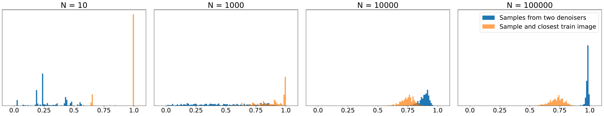
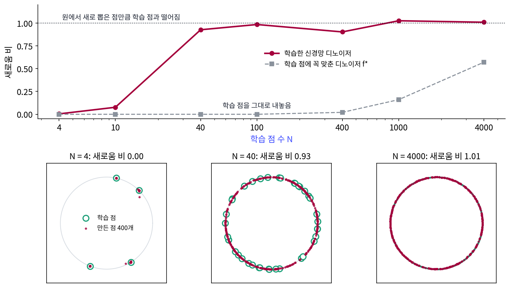
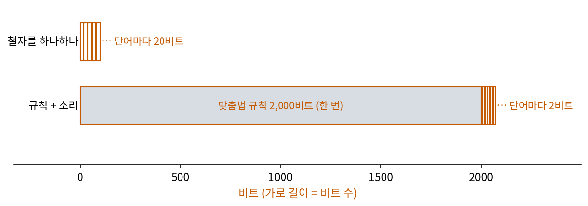
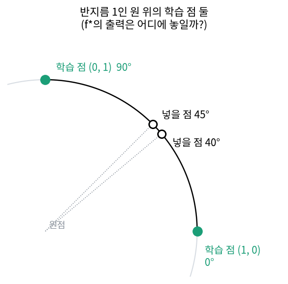
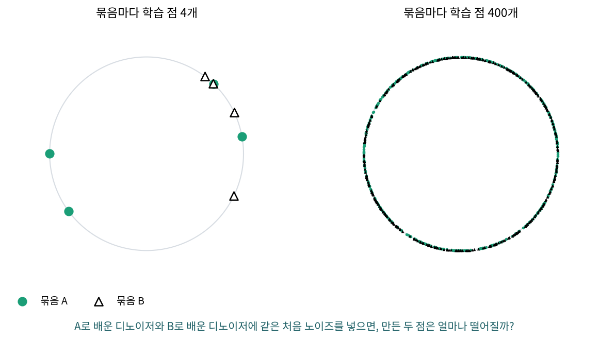

암기–일반화 전이: 자료 양이 경계를 정한다
이번에 볼 것은 라벨이 없는 생성 모델로, 그림 생성 모델이 학습 그림을 거의 그대로 다시 그리는 일은 실제로 일어난다. 같은 입력에 늘 같은 답을 내는 생성기는 룩업 테이블이고, 학습 그림 가운데 하나를 무작위로 골라 주는 생성기도 그림이 다양할 뿐 새 그림은 하나도 만들지 않는다. 디퓨전 모델은 노이즈를 걷는 디노이저를 배워 그림을 만든다. 그런데 학습 그림만 보고 가장 잘 걷는 디노이저를 만들면, 그 디노이저는 새 그림을 만들까 학습 그림을 꺼내 줄까? 그리고 실제 디퓨전 모델은 학습 그림이 몇 장일 때 꺼내 주기를 멈출까?
역사: 겹치지 않는 두 절반으로 배운 두 디노이저
2023년 칼리니와 동료들이 그림 생성 모델 Stable Diffusion에서 학습 그림을 거의 그대로 되살린 그림을 찾아낸 일은 디퓨전 모델도 외운다는 것을 보여 주었다. 그렇다면 외우지 않을 때는 무엇을 배우는가를 물은 연구가 이어졌다.
카드코다이(Zahra Kadkhodaie), 구스(Florentin Guth), 시몬첼리(Eero Simoncelli), 말라(Stéphane Mallat)는 ICLR 2024에 실은 논문에서 간단한 실험을 했다. 논문 제목은 「디퓨전 모델의 일반화는 기하에 맞춰진 조화 표현에서 나온다(Generalization in Diffusion Models Arises from Geometry-Adaptive Harmonic Representations)」다. 얼굴 사진 자료 CelebA를 80 × 80으로 줄여, 학습 그림 수 N을 1장부터 10만 장까지 바꿔 가며 디노이저를 학습시켰다. 그리고 같은 N에서 서로 겹치지 않는 두 묶음으로 디노이저 둘을 따로 학습시켜, 같은 노이즈에서 출발해 그림을 만들어 비교했다. N이 1~100장이면 디노이저는 학습 그림을 외워, 두 디노이저가 각자 자기 학습 그림을 내놓았다. 1,000장이면 학습 그림과 비슷하지만 군데군데 일그러진 그림이 나왔고, 10만 장이면 두 디노이저가 거의 똑같은 그림을 만들었다. 서로 다른 그림으로 배웠는데 같은 것을 배운 것이다.


학습 그림 수만 바꿔 가며 두 번씩 학습시키는 거면, 생각만 떠올리면 누구나 할 수 있었을 것 같은데요.

두 디노이저가 「거의 똑같은 그림」을 만들려면 먼저 무엇이 되어 있어야 할까요?

음… 둘 다 그림을 제대로 만들 줄 알아야죠. 둘 다 엉망이면 같은지 다른지 볼 것도 없고요.

그래요. 노이즈를 걷어 그럴듯한 그림을 만드는 디퓨전 모델이 자리 잡은 것이 2020년 무렵이에요. 그 전에는 비교할 만한 디노이저부터 없었고, 「외우지 않을 때는 무엇을 배우나」라는 물음도 칼리니와 동료들이 외운 그림을 찾아낸 뒤에야 나왔어요.

그런데 1,000장에서 군데군데 일그러진 그림이 나왔다는 건 외우기와 새로 만들기 사이 어딘가였다는 거잖아요. 그 사이가 한 자리에서 확 바뀌는지 천천히 바뀌는지는 얼굴 그림 몇 장으로 알 수 있어요?

얼굴은 새 그림이 어디에 있어야 맞는지부터 말하기 어렵죠. 그래서 새 점이 놓일 곳이 분명한 자료로 작게 다시 해 보려는 거예요.

원 위의 점이면 새 점이 원 위에 있는지 눈으로 보이겠네요. 학습 점이 몇 개일 때 원 전체로 퍼지기 시작할까요?
원 위의 점으로 다시 해 보기
그 실험을 평면에서 작게 다시 해 보자. 자료는 반지름 1인 원 위에서 각도를 0°~360° 사이에서 고르게 아무렇게나 뽑은 점이다. 원을 고른 것은 「학습 점으로 돌아가는가, 원 전체로 퍼지는가」를 눈으로 가를 수 있고, 처음 보는 점이 어디에 있어야 하는지(원 위)가 분명하기 때문이다.
먼저 학습 점만 보고 만들 수 있는 가장 좋은 디노이저를 적어 보자. 학습 점 N개 가운데 하나에 노이즈가 섞여 x가 되었다면, 원래 점을 제곱 오차가 가장 작게 추정하는 값은 학습 점들의 가중 평균이다. 가까운 학습 점일수록 무게가 크다.
f*의 출력은 늘 학습 점의 가중 평균이다. 노이즈 세기 σ를 큰 값에서 작은 값으로 줄여 가며 이 디노이저로 노이즈를 걷어 내면, 끝에 가서는 무게가 가장 가까운 학습 점 하나에 몰리고 출력은 그 학습 점이 된다. 학습 자료에서 가장 잘하는 디노이저는 룩업 테이블이다.
이제 원 위의 학습 점으로 작은 신경망 디노이저를 학습시킨다. 디노이저 fθ(x, σ)는 노이즈 낀 점과 노이즈 세기를 받아 원래 점을 추정하는 MLP(파라미터 33,794개)이고, 학습 점에 노이즈를 섞어 가며 원래 점을 맞히도록 6,000스텝 학습시킨다. 학습 점 수 N은 4, 10, 40, 100, 400, 1,000, 4,000으로 바꾼다. 학습한 디노이저로 노이즈 세기 3에서 0.002까지 40스텝에 걸쳐 노이즈를 걷어 점 1,000개를 만든다(sources/memorization/s3_denoiser.py).
만든 점이 새로운지는 가장 가까운 학습 점까지의 거리로 잰다. 다만 학습 점이 많으면 원 위 어디에 점을 찍어도 가까운 학습 점이 있으므로, 원에서 새로 뽑은 점 1,000개의 같은 거리와 견준다. 원에서 조금 벗어난 것이 섞이지 않게 거리는 원 위의 각도로 잰다. 두 거리의 가운데값의 비를 「새로움 비」라 하자. 0이면 학습 점을 그대로 내놓은 것이고, 1 근처면 원에서 새로 뽑은 점만큼 학습 점과 떨어져 있는 것이다(sources/memorization/s3b_angle.py).
| 학습 점 수 N | 신경망: 새로움 비 | 신경망: 점이 있는 칸 (10°씩 36칸) | f*: 새로움 비 | f*: 점이 있는 칸 |
|---|---|---|---|---|
| 4 | 0.004 | 7 | 0.000 | 4 |
| 10 | 0.077 | 27 | 0.000 | 8 |
| 40 | 0.927 | 36 | 0.000 | 28 |
| 100 | 0.984 | 36 | 0.000 | 35 |
| 400 | 0.903 | 36 | 0.021 | 36 |
| 1,000 | 1.025 | 36 | 0.160 | 36 |
| 4,000 | 1.009 | 36 | 0.571 | 36 |
학습 점이 4개이면 신경망도 f*처럼 학습 점 넷으로 돌아가지만, 10개이면 대부분 학습 점 근처에 붙고 일부가 그 사이로 번진다. 40개부터는 만든 점이 학습 점 위가 아니라 원 위 아무 데나 떨어져서 새로움 비가 1에 가깝다. 원에서 벗어난 정도의 가운데값은 어느 N에서나 0.0012~0.0018이니, 만든 점은 원 위에 있다. 같은 학습 점을 본 f*는 N = 100까지 새로움 비가 0이다. 큰 N에서 f*의 새로움 비가 오르는 것은 학습 점 사이의 평균 간격(각도 2π/N, N = 1,000이면 0.0063, 4,000이면 0.0016)이 가장 작은 노이즈 세기 0.002에 가까워지거나 그보다 좁아져, 노이즈를 다 걷은 끝에도 이웃 학습 점끼리 섞이기 때문이다. 이렇게 학습 자료 수가 늘면서 생성 모델이 학습 자료를 꺼내 주다가 자료가 사는 곳 전체로 퍼져 새것을 만들기 시작하는 넘어감을 암기–일반화 전이 (외우기에서 새로 만들기로의 넘어감, memorization–generalization transition)라 한다.

압축의 말로 읽으면 이렇다. 학습 점 N개를 그대로 지니는 설명의 길이는 N에 비례해 늘고, 「반지름 1인 원」이라는 설명의 길이는 N이 늘어도 늘지 않는다. 학습 점이 적을 때는 점을 그대로 적는 설명이 짧고, 많아지면 원이라는 설명이 훨씬 짧다. 신경망은 학습 자료를 맞히려고 했을 뿐인데, 자료가 많아지자 학습 자료에서 가장 잘하는 f*와 달리 짧은 설명인 「원」에 가까운 답을 냈다. 신경망이 왜 「원」에 가까운 답을 내는지에 대해 카드코다이 외는 디노이저가 그림의 기하에 맞춰진 축에서 계수를 줄이는 방식으로 일한다는 설명을 내놓았다. 원 위의 장난감에서 본 것은 넘어감 자체까지이고, 넘어감이 일어나는 원인이 그림에서와 같은지는 이 실험으로 말할 수 없다.
ML에서: 겹친 그림이 많으면 더 외운다
칼리니와 동료들은 「신경망 언어 모델의 암기를 재기(Quantifying Memorization Across Neural Language Models)」(ICLR 2023)에서 언어 모델이 「얼마나 외우는가」를 쟀다. 모델이 클수록, 학습 자료에서 같은 글이 여러 번 겹쳐 나올수록, 앞에 주는 문맥이 길수록 외운 글을 더 많이 내놓으며 셋 다 로그와 선형 관계를 따른다는 것이 그들의 보고다. 원 위의 실험으로 말하면, 같은 학습 점이 여러 번 들어간 자료는 서로 다른 점 수 N이 더 작은 자료와 비슷하다. 학습 자료에서 겹친 글과 그림을 걸러 내는 일이 외우기를 줄이는 방법으로 거론되는 것도 이 때문이다.
문제 7. 받아쓰기 공책
받아쓰기를 준비하는 학생이 단어 하나의 철자를 하나하나 외우는 데 20비트가 든다고 하자. 맞춤법 규칙을 익히는 데는 한 번에 2,000비트가 들고, 규칙을 익힌 뒤에는 단어마다 소리만 2비트로 외우면 된다. (가) 단어 10개, 100개, 1,000개를 준비할 때 두 방법은 각각 몇 비트인가? (나) 단어가 몇 개를 넘으면 규칙이 짧아지는가? (다) 처음 보는 단어가 받아쓰기에 나오면?

(가)는 하나하나 외우면 200, 2,000, 20,000비트, 규칙은 2,020, 2,200, 4,000비트예요. 100개까지는 하나하나 외우는 게 짧고 1,000개면 규칙이 다섯 배 짧아요.

(나)는 20n > 2,000 + 2n이니까 n > 111.1, 112개부터 규칙이 짧아.
(다)는요?
철자를 하나하나 외운 학생은 못 써요. 규칙을 익힌 학생만 소리를 듣고 써요.

원 위의 디노이저랑 같아. 학습 점이 적으면 점을 그대로 적는 게 짧고, 많으면 「원」이라는 규칙이 짧아. 어느 설명이 짧은지가 바뀌는 자리가 전이가 일어나는 자리인 거네.

1학년 때는 시험 범위가 작아서 공식을 외워도 됐는데, 3학년이 되니까 외울 게 너무 많아서 유도하는 법을 익히는 게 오히려 편했어요.
문제 8. 학습 점 둘 사이에서
학습 점이 원 위 각도 0°의 (1, 0)과 90°의 (0, 1) 둘뿐일 때, 학습 점에 꼭 맞춘 디노이저 f*에 원 위 45°의 점과 40°의 점을 넣는다. (가) 노이즈 세기 σ = 1, 0.3, 0.1에서 두 학습 점이 받는 무게와 f*의 출력은? (나) 45°의 점에 대한 출력은 원 위에 있는가? (다) f*로 만든 점이 원 위의 새 점이 될 수 있는가?

코드로 돌렸어요. 45°에서는 σ가 무엇이든 무게가 0.5, 0.5라서 f* = (0.5, 0.5)예요. 40°는 σ = 1에서 0.531, 0.469, σ = 0.3에서 0.797, 0.203, σ = 0.1에서는 거의 1, 0이라 f* = (1, 0)이에요.
출력이 원 위에 있나요?
(0.5, 0.5)의 길이는 0.707이야. 원 안쪽이야. 두 학습 점을 잇는 선분의 가운데지.

그럼 45° 근처에서 시작하면 원 안쪽의 새 점이 나오는 거 아니에요? (0.5, 0.5)도 학습 점에는 없던 점이잖아요.
σ = 0.1에서 40°의 점은 어디로 갔죠?

(1, 0)으로요. σ를 줄이면 조금만 한쪽에 가까워도 더 가까운 학습 점으로 끌려가네요. 정확히 45°에 서 있지 않는 한, 노이즈를 다 걷어 내면 학습 점 둘 가운데 하나가 돼요.

f*의 출력은 늘 학습 점의 가중 평균이니까, 나올 수 있는 건 학습 점을 이은 선분 위뿐이야. 원 위의 새 점은 만들 수 없어. 학습 점 사이를 섞는 건 새로 만드는 게 아니라 흐리게 하는 거고.

볼록 조합은 볼록 껍질 밖으로 못 나간다는 거, 선형대수 시간에 배운 그대로네요.
문제 9. 겹치지 않는 두 절반
원 위의 학습 점을 겹치지 않는 두 묶음 A, B로 나눠 디노이저 둘을 따로 학습시키고, 같은 처음 노이즈에서 점을 만들어 짝지은 두 점의 거리를 잰다. 실험 결과 묶음마다 4개일 때 거리의 가운데값은 1.19, 400개일 때 0.047이었고, 원 위에서 아무렇게나 뽑은 두 점의 거리의 가운데값은 1.42다. (가) 두 결과를 해석하라. (나) 디퓨전 모델이 학습 그림을 외웠는지 확인할 때 이 방법이 학습 그림과의 거리를 재는 것보다 나은 점은 무엇인가?

4개씩이면 1.19라서 아무렇게나 뽑은 두 점의 1.42에 가까워요. 두 디노이저가 서로 다른 점을 내놓은 거예요. 400개씩이면 0.047이라 거의 같은 점이고요.
4개씩일 때 두 디노이저는 각각 무엇을 내놓았을까요?
각자 자기 학습 점이요. A와 B의 학습 점이 서로 다르니까 같은 노이즈에서 출발해도 다른 데로 가요.

400개씩이면 A와 B는 점을 하나도 같이 안 썼는데 같은 데로 가잖아. 그럼 둘이 배운 건 각자의 학습 점이 아니라 둘이 함께 가진 것, 원이라는 거네.
그래요. (나)는요? 학습 그림과의 거리만 재면 어떤 일이 있을 수 있죠?
학습 그림이 아주 많으면 새 그림도 어느 학습 그림과는 가까울 수 있어요. 원 위에 점이 4,000개면 어디든 가까운 학습 점이 있었던 것처럼요. 그래서 원에서 새로 뽑은 점과 견줘야 했고요.
두 절반 방법은 「무엇과 가까운가」를 묻지 않고 「다른 자료로 배워도 같은 것을 배우나」를 물어요. 같은 것을 배웠다면 그건 어느 한쪽 학습 자료에만 있는 것이 아니니까 외운 게 아니에요.
두 조가 서로 다른 자료로 따로 보고서를 썼는데 결론이 같으면, 베낀 게 아니라 둘 다 제대로 찾은 거라고 교수님이 인정해 주시는 거랑 같네요. 두 조가 묶음 A와 B, 같은 결론이 같은 점이에요.